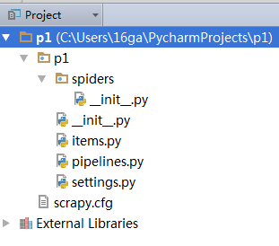
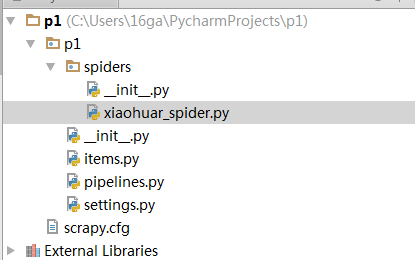
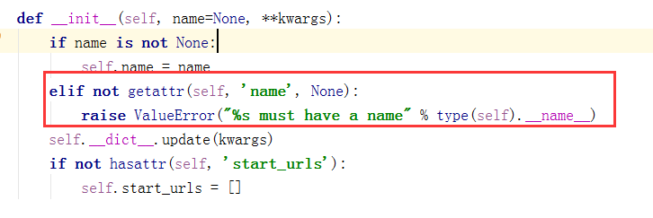
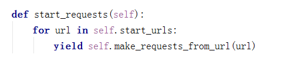
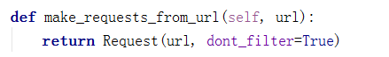
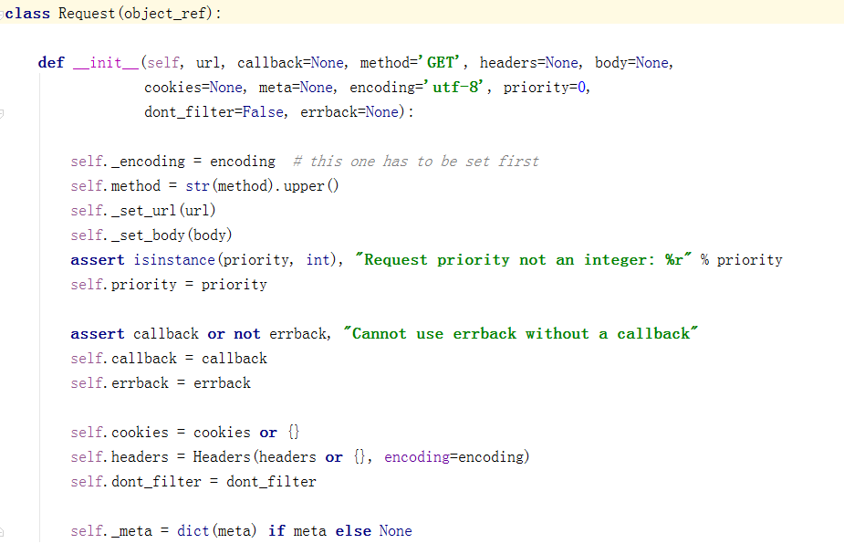

教你分分钟学会用python爬虫框架Scrapy爬取心目中的女神
 Scrapy主要包括了以下组件：
Scrapy主要包括了以下组件：
- 引擎(Scrapy)
用来处理整个系统的数据流处理, 触发事务(框架核心) - 调度器(Scheduler)
用来接受引擎发过来的请求, 压入队列中, 并在引擎再次请求的时候返回. 可以想像成一个URL（抓取网页的网址或者说是链接）的优先队列, 由它来决定下一个要抓取的网址是什么, 同时去除重复的网址 - 下载器(Downloader)
用于下载网页内容, 并将网页内容返回给蜘蛛(Scrapy下载器是建立在twisted这个高效的异步模型上的) - 爬虫(Spiders)
爬虫是主要干活的, 用于从特定的网页中提取自己需要的信息, 即所谓的实体(Item)。用户也可以从中提取出链接,让Scrapy继续抓取下一个页面 - 项目管道(Pipeline)
负责处理爬虫从网页中抽取的实体，主要的功能是持久化实体、验证实体的有效性、清除不需要的信息。当页面被爬虫解析后，将被发送到项目管道，并经过几个特定的次序处理数据。 - 下载器中间件(Downloader Middlewares)
位于Scrapy引擎和下载器之间的框架，主要是处理Scrapy引擎与下载器之间的请求及响应。 - 爬虫中间件(Spider Middlewares)
介于Scrapy引擎和爬虫之间的框架，主要工作是处理蜘蛛的响应输入和请求输出。 - 调度中间件(Scheduler Middewares)
介于Scrapy引擎和调度之间的中间件，从Scrapy引擎发送到调度的请求和响应。
Scrapy运行流程大概如下：
- 引擎从调度器中取出一个链接(URL)用于接下来的抓取
- 引擎把URL封装成一个请求(Request)传给下载器
- 下载器把资源下载下来，并封装成应答包(Response)
- 爬虫解析Response
- 解析出实体（Item）,则交给实体管道进行进一步的处理
- 解析出的是链接（URL）,则把URL交给调度器等待抓取
一、安装
因为python3并不能完全支持Scrapy，因此为了完美运行Scrapy，我们使用python2.7来编写和运行Scrapy。
|
1 |
pip install Scrapy |
注：windows平台需要依赖pywin32，请根据自己系统32/64位选择下载安装，https://sourceforge.net/projects/pywin32/
其它可能依赖的安装包：lxml-3.6.4-cp27-cp27m-win_amd64.whl，VCForPython27.msi百度下载即可
二、基本使用
1、创建项目
运行命令:
|
1 |
scrapy startproject p1（your_project_name） |
2.自动创建目录的结果：

文件说明：
- scrapy.cfg 项目的配置信息，主要为Scrapy命令行工具提供一个基础的配置信息。（真正爬虫相关的配置信息在settings.py文件中）
- items.py 设置数据存储模板，用于结构化数据，如：Django的Model
- pipelines 数据处理行为，如：一般结构化的数据持久化
- settings.py 配置文件，如：递归的层数、并发数，延迟下载等
- spiders 爬虫目录，如：创建文件，编写爬虫规则
注意：一般创建爬虫文件时，以网站域名命名
3、编写爬虫
在spiders目录中新建 xiaohuar_spider.py 文件

示例代码：
|
1 2 3 4 5 6 7 8 9 10 11 12 13 14 15 16 17 18 19 |
#!/usr/bin/env python # -*- coding:utf-8 -*- import scrapy class XiaoHuarSpider(scrapy.spiders.Spider): name = "xiaohuar" allowed_domains = ["xiaohuar.com"] start_urls = [ "http://www.xiaohuar.com/hua/", ] def parse(self, response): # print(response, type(response)) # from scrapy.http.response.html import HtmlResponse # print(response.body_as_unicode()) current_url = response.url #爬取时请求的url body = response.body #返回的html unicode_body = response.body_as_unicode()#返回的html unicode编码 |
备注：
- 1.爬虫文件需要定义一个类，并继承scrapy.spiders.Spider
- 2.必须定义name，即爬虫名，如果没有name，会报错。因为源码中是这样定义的：

- 3.编写函数parse，这里需要注意的是，该函数名不能改变，因为Scrapy源码中默认callback函数的函数名就是parse；
- 4.定义需要爬取的url，放在列表中，因为可以爬取多个url，Scrapy源码是一个For循环，从上到下爬取这些url，使用生成器迭代将url发送给下载器下载url的html。源码截图：



4、运行
进入p1目录，运行命令
|
1 |
scrapy crawl xiaohau --nolog |
格式：scrapy crawl+爬虫名 –nolog即不显示日志
5.scrapy查询语法：
当我们爬取大量的网页，如果自己写正则匹配，会很麻烦，也很浪费时间，令人欣慰的是，scrapy内部支持更简单的查询语法，帮助我们去html中查询我们需要的标签和标签内容以及标签属性。下面逐一进行介绍：
- 查询子子孙孙中的某个标签(以div标签为例)：//div
- 查询儿子中的某个标签(以div标签为例)：/div
- 查询标签中带有某个class属性的标签：//div[@class=’c1′]即子子孙孙中标签是div且class=‘c1’的标签
- 查询标签中带有某个class=‘c1’并且自定义属性name=‘alex’的标签：//div[@class=’c1′][@name=’alex’]
- 查询某个标签的文本内容：//div/span/text() 即查询子子孙孙中div下面的span标签中的文本内容
- 查询某个属性的值（例如查询a标签的href属性）：//a/@href
示例代码：
|
1 2 3 4 5 6 7 8 9 10 11 12 13 14 15 16 17 18 19 |
def parse(self, response): # 分析页面 # 找到页面中符合规则的内容（校花图片），保存 # 找到所有的a标签，再访问其他a标签，一层一层的搞下去 hxs = HtmlXPathSelector(response)#创建查询对象 # 如果url是 http://www.xiaohuar.com/list-1-\d+.html if re.match('http://www.xiaohuar.com/list-1-\d+.html', response.url): #如果url能够匹配到需要爬取的url，即本站url items = hxs.select('//div[@class="item_list infinite_scroll"]/div') #select中填写查询目标，按scrapy查询语法书写 for i in range(len(items)): src = hxs.select('//div[@class="item_list infinite_scroll"]/div[%d]//div[@class="img"]/a/img/@src' % i).extract()#查询所有img标签的src属性，即获取校花图片地址 name = hxs.select('//div[@class="item_list infinite_scroll"]/div[%d]//div[@class="img"]/span/text()' % i).extract() #获取span的文本内容，即校花姓名 school = hxs.select('//div[@class="item_list infinite_scroll"]/div[%d]//div[@class="img"]/div[@class="btns"]/a/text()' % i).extract() #校花学校 if src: ab_src = "http://www.xiaohuar.com" + src[0]#相对路径拼接 file_name = "%s_%s.jpg" % (school[0].encode('utf-8'), name[0].encode('utf-8')) #文件名，因为python27默认编码格式是unicode编码，因此我们需要编码成utf-8 file_path = os.path.join("/Users/wupeiqi/PycharmProjects/beauty/pic", file_name) urllib.urlretrieve(ab_src, file_path) |
注：urllib.urlretrieve(ab_src, file_path) ，接收文件路径和需要保存的路径，会自动去文件路径下载并保存到我们指定的本地路径。
5.递归爬取网页
上述代码仅仅实现了一个url的爬取，如果该url的爬取的内容中包含了其他url，而我们也想对其进行爬取，那么如何实现递归爬取网页呢？
示例代码：
|
1 2 3 4 5 |
# 获取所有的url，继续访问，并在其中寻找相同的url all_urls = hxs.select('//a/@href').extract() for url in all_urls: if url.startswith('http://www.xiaohuar.com/list-1-'): yield Request(url, callback=self.parse) |
即通过yield生成器向每一个url发送request请求，并执行返回函数parse，从而递归获取校花图片和校花姓名学校等信息。
注：可以修改settings.py 中的配置文件，以此来指定“递归”的层数，如： DEPTH_LIMIT = 1
6.scrapy查询语法中的正则：
|
1 2 3 4 5 6 7 8 9 10 11 12 13 14 15 16 17 18 |
from scrapy.selector import Selector from scrapy.http import HtmlResponse html = """<!DOCTYPE html> <html> <head lang="en"> <meta charset="UTF-8"> <title></title> </head> <body> <li class="item-"><a href="link.html">first item</a></li> <li class="item-0"><a href="link1.html">first item</a></li> <li class="item-1"><a href="link2.html">second item</a></li> </body> </html> """ response = HtmlResponse(url='http://example.com', body=html,encoding='utf-8') ret = Selector(response=response).xpath('//li[re:test(@class, "item-\d*")]//@href').extract() print(ret) |